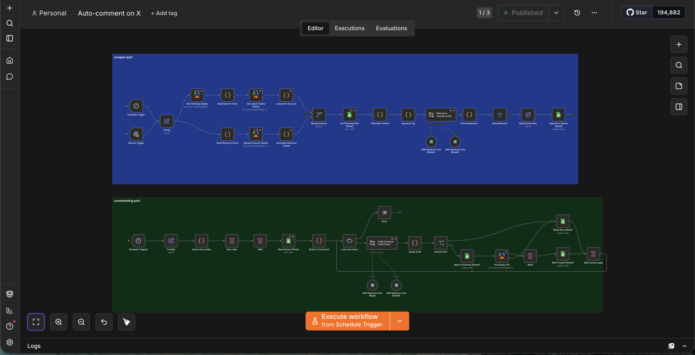
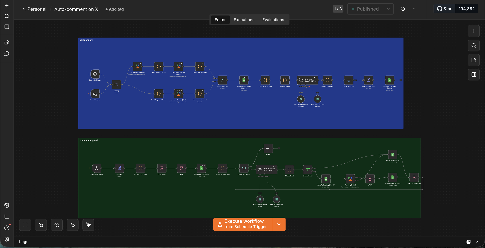

← All work
Case Study / AI Agents · Social
X (Twitter) AI Auto-Comment
The agentic engagement engine tuned for X — pull the latest tweets from target accounts, score relevance with an LLM, draft a reply, and post only when it clears the bar.

Role
Design, build & operate
Stack
n8n · Apify · AWS Bedrock · X API
Type
Two-stage (scrape → reply)
Impact
Relevance-gated · autonomous
01Overview
A two-stage system — a scraper that collects tweets from target accounts (by following list and keyword search), and a commenter that classifies relevance, drafts a reply, and posts it to X only when a should-post check passes.
02Business problem
Engaging on X at scale by hand is unsustainable, and untargeted replies read as spam. The system needed to reply selectively and in a credible voice, fully hands-off.
03Architecture
TriggerAIIntegrationStorage
Triggers
Schedule
Scraper part
Apify (Get Following / Keyword Search)Merge + Filter new tweets
AI part
Relevance classify (LLM + 2× AWS Bedrock)Draft comment LLM chain
Action
Post reply (X)Build queue / mark posted
04Workflow
Schedule→Apify following + keyword search→Merge + filter new tweets→Relevance classify (Bedrock)→Should post?→Draft reply (LLM)→Post reply (X)→Mark posted
05Screenshots

06AI components
- Relevance classification with an LLM + AWS Bedrock chat models.
- A draft-comment LLM chain for the reply.
- A should-post gate that suppresses low-relevance replies.
07Integrations
- Apify — X scraping (following list + keyword search).
- AWS Bedrock — classification + drafting.
- X (Twitter) API — posting the reply.
- A queue for new-tweet de-duplication.
08Technical challenges
- Merging two scrape sources (following + keyword) and de-duplicating new tweets.
- Keeping the relevance bar high to avoid spammy replies.
- Drafting credible, on-topic replies.
- Posting reliably within X API limits.
09Reliability engineering
- Deployment: self-hosted n8n on a schedule.
- Monitoring: a build-queue with posted/failed state.
- Error handling: filter-new-tweets prevents duplicates; failures don't drop the queue.
- Validation: a should-post relevance gate before drafting.
- Scalability: decoupled scraper and commenter stages with an intermediate queue.
10Business impact
Relevance
-gated replies
2-source
following + keyword
0
duplicate replies
Auto
hands-off
11Lessons learned
Two scrape sources widen coverage, but the real leverage is the relevance gate — it decides whether automation helps the brand or embarrasses it.
12Future improvements
- Thread-aware replies that read the conversation.
- Per-topic tone profiles.
- Track engagement to auto-tune the relevance threshold.